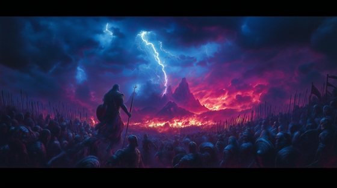

The Titanomachy was the ten-year war between the Titans, led by Cronus, and the Olympians, led by Zeus. The conflict erupted after Zeus freed his siblings and the ancient allies buried by Cronus. The Olympians made their base on Mount Olympus, while the Titans fought from Mount Othrys.
Key players in the war included:
After ten years of divine carnage, the Olympians emerged victorious. The defeated Titans were cast into Tartarus, guarded by the Hecatoncheires. Only a few—like Prometheus, Oceanus, and Metis—were spared, having sided with Zeus or shown wisdom.
The Titanomachy marks the most pivotal transition in Greek mythology: the fall of the old gods and the birth of the Olympian age.
Titanomachy
I tore the sky with lightning’s cry
The mountain shook, the stars ran dry
This war was carved in blood and fate—
A storm to end the ancient hate
You think your fire will break the chain?
I ruled before the skies had name
You are a spark. I am the flood—
A throne built high on Titan blood
Ten years of thunder, earth and flame
The heavens crack beneath our name
Titanomachy, gods collide
The stars go dark, the worlds divide
Stone against storm, steel against scream—
The end of time, the death of dream
I cracked the sea upon their gate
And drowned their armies under hate
I held the sky, I bore the weight
Of traitors blind to Titan fate
I cloaked the dead in shadow’s veil
And watched their courage split and pale
I burned like suns they cannot tame—
The father-light that bred their flame
Fists like meteors, eyes like fire
We build and break the world entire
Titanomachy, gods collide
The stars go dark, the worlds divide
Stone against storm, steel against scream—
The end of time, the death of dream
GAIA: “You war above, you tear below—
But all your blood feeds what I grow.”
Mount Othrys fell, Olympus rose
A sky of screams, a sea of throes
The Titan host was thrown in chains
Their legacy now dust and names
Titanomachy, wrath unfurled
The gods have shaped a newer world
But peace won’t come, not yet, not clean—
The war may end, but not the dream
Let them remember what we burned—
The sky was never truly turned